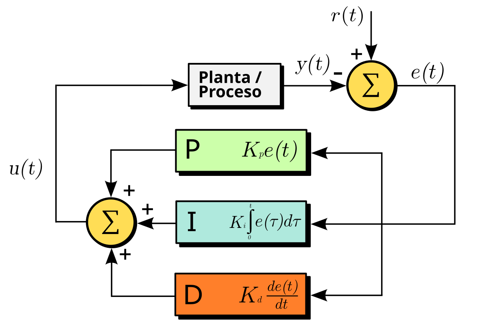

Control Engineering
Automatic control has been a fundamental pillar in scientific and industrial development. From aircraft guidance systems to modern industrial processes, its impact is profound. This course introduces the principles, mathematical tools, and practical techniques required to analyze, design, and implement control systems. Students will learn to model dynamic systems, evaluate stability, and design classical controllers such as PID, applying theory to real-world environments.
Learning Objectives
- Analyze the response of linear systems using transfer functions.
- Differentiate advantages and disadvantages of open-loop and closed-loop systems.
- Apply mathematical transforms in control system analysis.
- Design and tune PID-type controllers.
- Implement complete control systems in laboratory environments.
Course Outline
-
Topic 1: Introduction to Control Systems
- Dynamic systems and classification
- Feedback systems
- Transfer functions
- Block diagrams and signal flow graphs
- SISO and MIMO system modeling
- Electrical, mechanical, and thermal systems
- State variables
- Transfer functions using Laplace transform
- Transient and steady-state response
- Absolute and relative stability
- Routh criterion and root locus
- MATLAB simulation
- P, PI, PD, and PID controllers
- Phase compensators
- Classical design techniques
- Practical implementation of control systems
Topic 2: Mathematical Modeling
Topic 3: Analysis and Stability
Topic 4: Design and Implementation

Integrating GPU-accelerated AI tools into this Control Engineering course greatly enriches the learning experience by enabling real-time simulation of dynamic systems, rapid computation of root locus, Bode, and Nyquist diagrams, and intelligent optimization of PID and compensator tuning. Students can experiment with high-fidelity digital twins, train neural network–based controllers, and explore reinforcement learning approaches for autonomous control—all powered by GPU computation. AI-driven tutors can identify errors in stability analysis or controller design, offering targeted feedback. With campus GPU infrastructure, learners gain hands-on exposure to modern control methodologies used in robotics, aerospace, industrial automation, and smart systems.
Instructor

Mgr. Carlos López
Head of Mechatronics Engineering Laboratory